GAME DESIGN / SURVIVAL / PRESENTATION
Lone
Lands
Project presentation integrated directly into the portfolio.
Lone Lands Prototype
This section is for the playable portfolio prototype: implemented mechanics, current build status, level flow and what I personally designed or prototyped.
Core Gameplay
First-person exploration, shooting and survival-oriented interactions.
Enemy Prototype
Wolf behavior, detection, chase, attack, damage reaction and death flow.
Level Prototype
Village start, steppe routes, wolf territory, ruins/catacombs and radio-tower objective flow.
Portfolio Goal
A compact playable build that demonstrates my game-design, level-design and prototyping process.
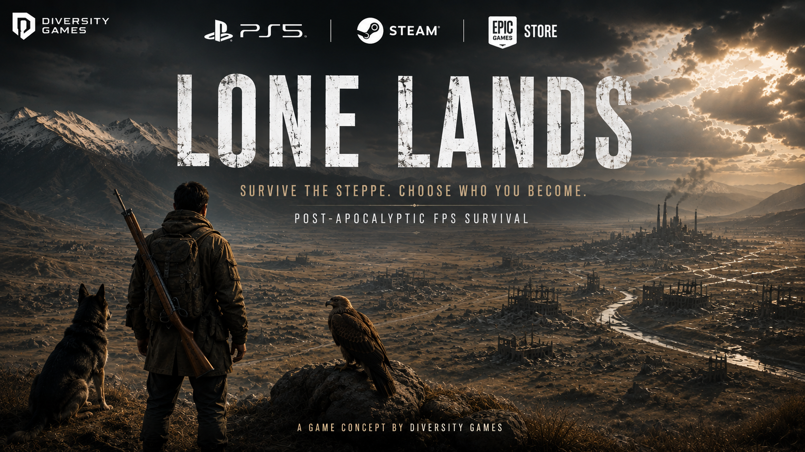
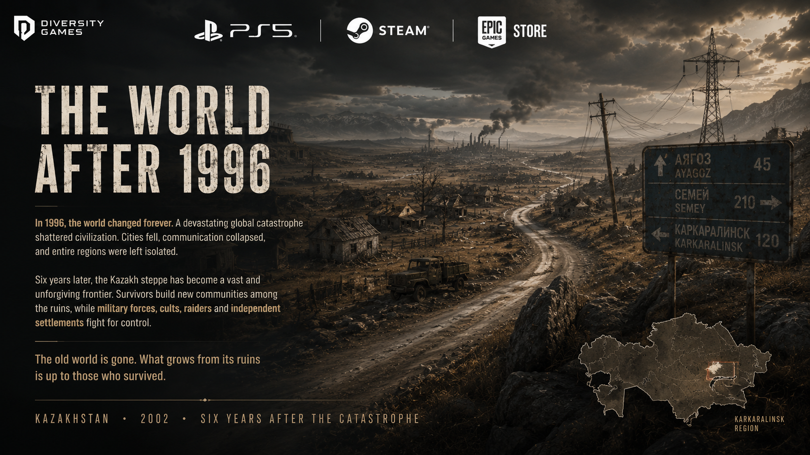
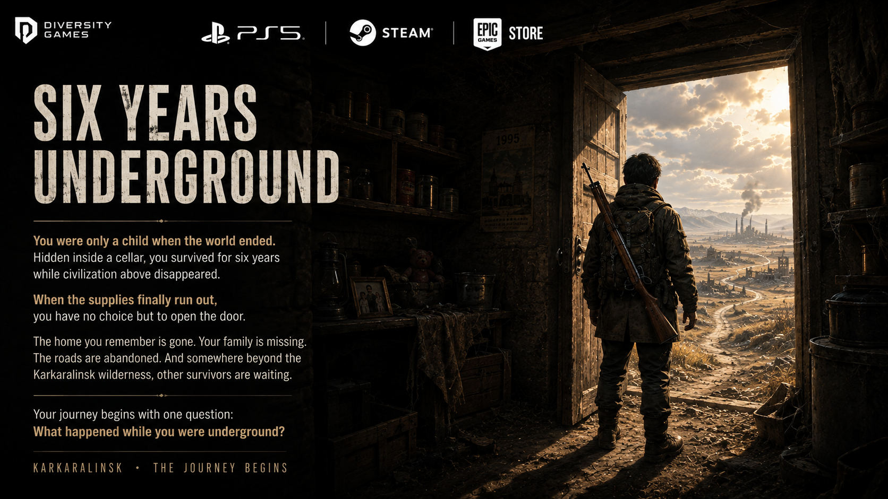
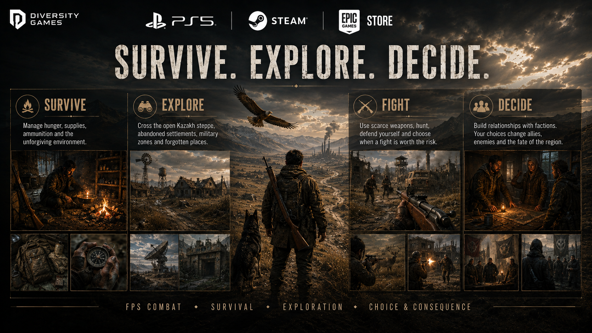
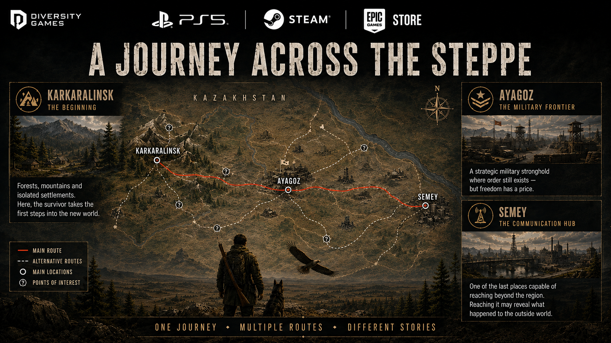
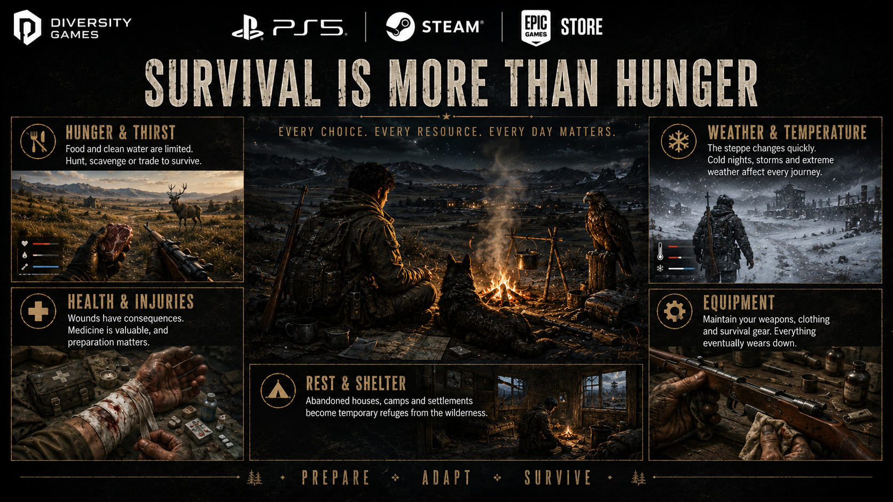
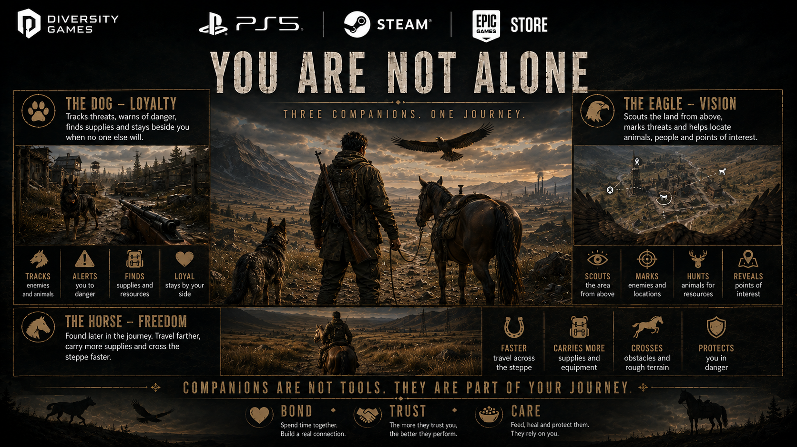
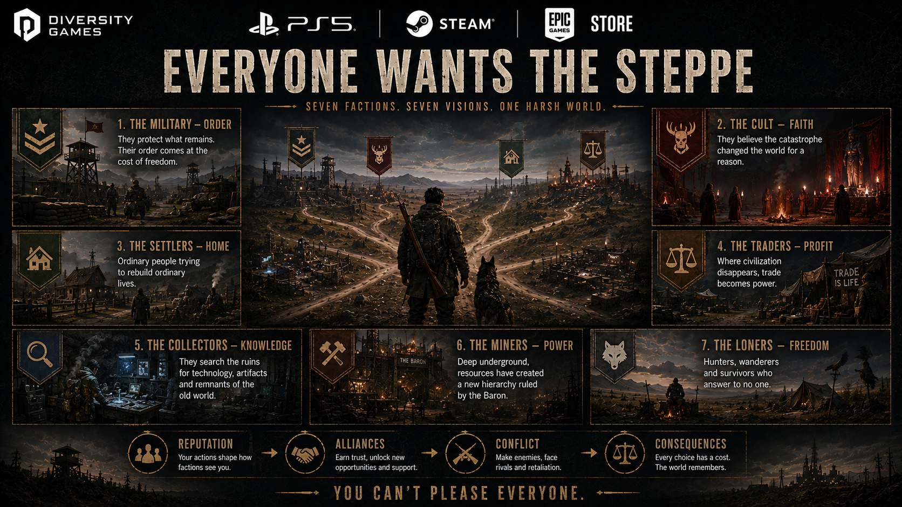
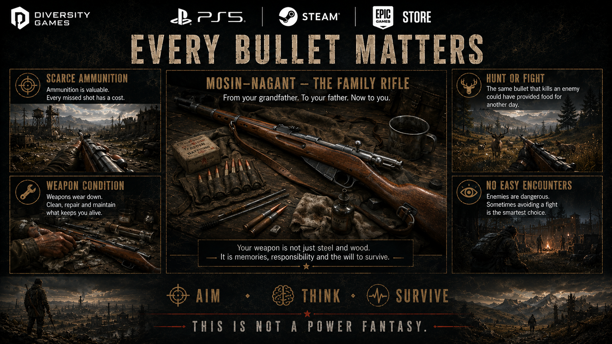
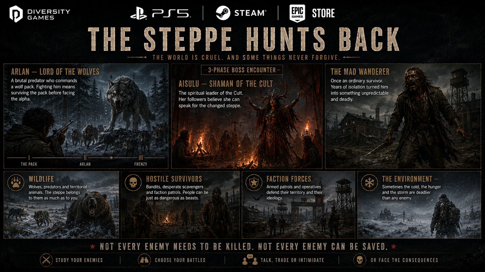
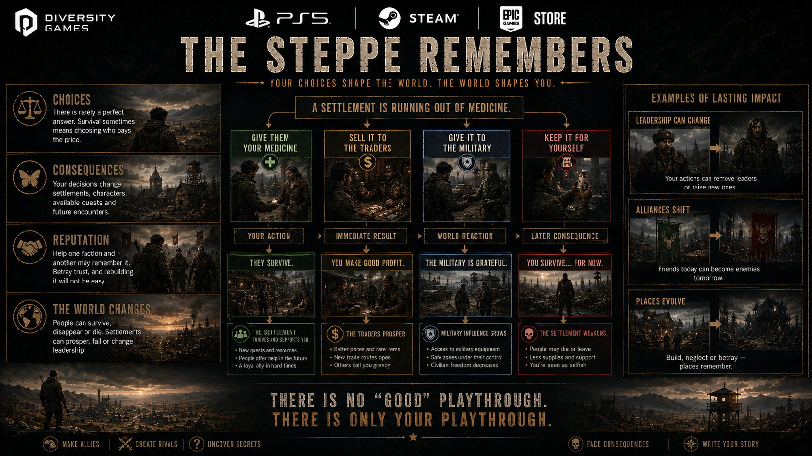
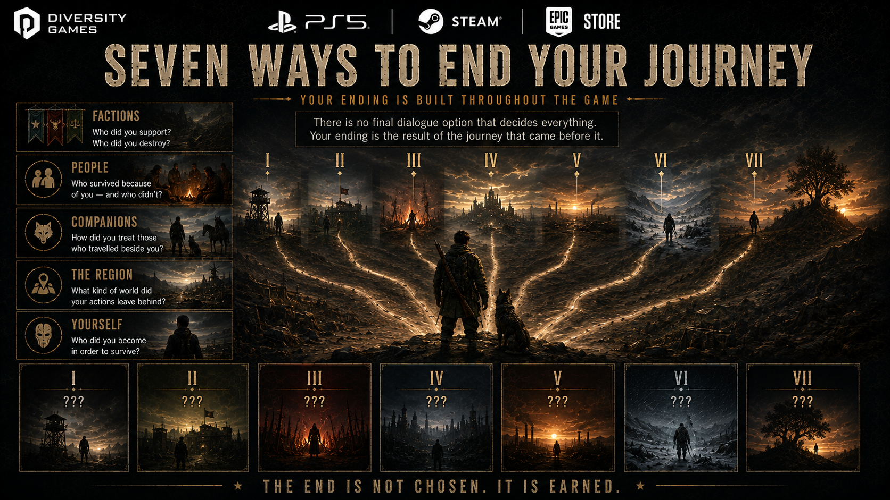
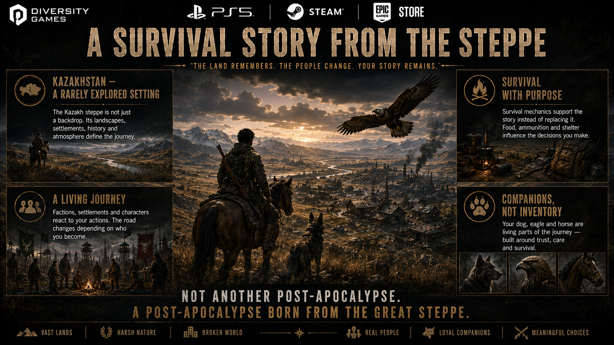
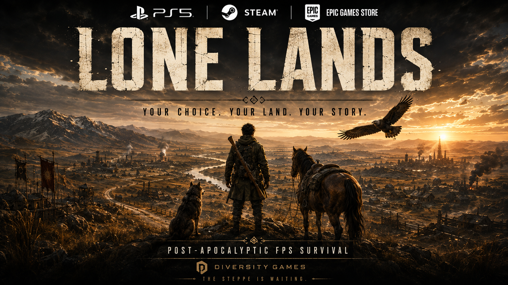
Gameplay Video
A YouTube gameplay video will be embedded here.